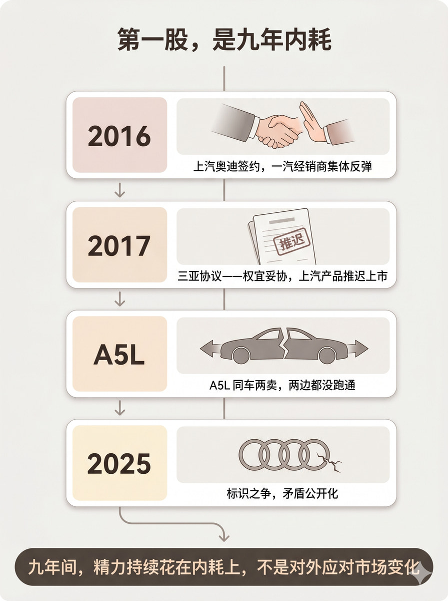
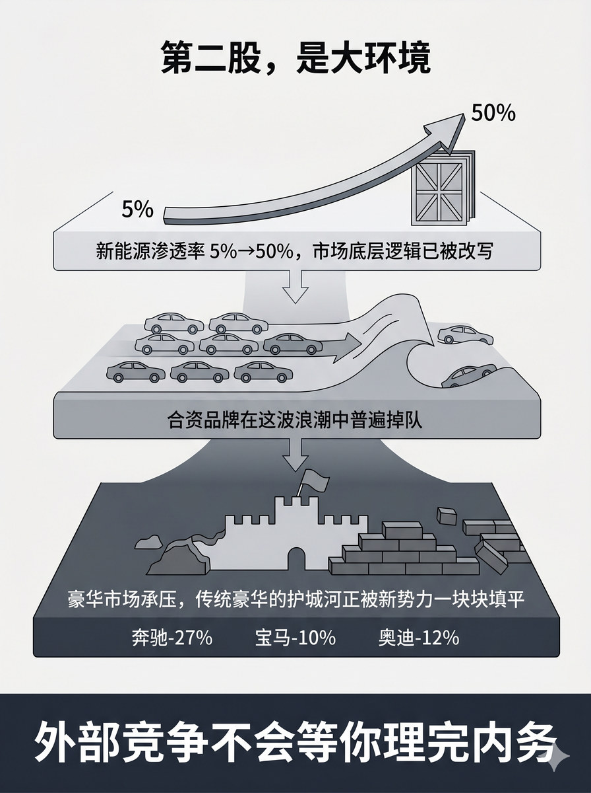

历史 Nano Banana 竖版短视频配图基线：表达传统豪华品牌份额侵蚀、价格压力和本土竞争，不丢失因果层级
# D3 分块段 03 Prompt 生成一张 3:4 竖版静态配图。 整体采用顶部标题 + 中部垂直时间线 + 底部结论的三区结构。 顶部居中放置标题"第一股：九年内耗"。 中部主体是一条自上而下的中央垂直细线，沿线挂着四个事件节点卡片，节点之间用向下的小箭头连接。四个节点卡片采用统一容器形式——每张卡片左侧是年份标签醒目显示，右侧是事件描述区。从上到下依次为： 第一个节点，左侧标签"2016"，右侧卡片内画一只握手手势被另一只手轻轻推开的隐喻画面，下方标注文字"上汽奥迪签约，一汽经销商集体反弹"。 第二个节点，左侧标签"2017"，右侧卡片内画一份文件或协议书，上面盖着一枚"推迟"字样的印章，下方标注文字"三亚协议——权宜妥协，上汽产品推迟上市"。 第三个节点，无年份标签改用车型代号，卡片内画同一辆轿车剪影从中间分裂成左右两半、分别指向两侧的隐喻画面，下方标注文字"A5L 同车两卖，两边都没跑通"。 第四个节点，左侧标签"2025"，右侧卡片内画一个简化的四环图形旁边出现一道细小裂痕，下方标注文字"标识之争，矛盾公开化"。 中央竖线从最后一个节点向下继续延伸并微微弯曲，连接到下方的底部结论区。底部是一个宽幅横条，深色底浅色字，略圆角。横条内为大字"九年间，精力持续花在内耗上，不是对外应对市场变化"。 图中只允许出现这些文字：为什么要走到这一步、第一股九年内耗、2016、上汽奥迪签约、一汽经销商集体反弹、2017、三亚协议、权宜妥协、上汽产品推迟上市、A5L、同车两卖、两边都没跑通、2025、标识之争、矛盾公开化、九年间精力持续花在内耗上不是对外应对市场变化。除这些文字外不要新增任何说明性文字、具体车型销量数字或百分比。 不要四环官方logo，不要真车照片，不要感叹号，不要水印，不要"AI生成"字样，不要无意义英文装饰。 整体视觉采用 soft narrative structural editorial，gentle editorial illustration with modular clarity，warm but restrained。中央时间线柔和流畅，四个节点卡片用柔和圆角卡片承载，整体色调偏暖灰或米白底，节点用轻微暖色强调但不饱和。底部结论区稍加深色以稳定收束。不要情绪海报化，不要暖色过满，时间线必须清楚节点不模糊。

# D3 分块段 04 Prompt 生成一张 3:4 竖版静态配图。 整体采用顶部标题 + 中部三层递进堆叠 + 底部结论的四区结构。 顶部居中放置标题"第二股，是大环境"。 中部主体区由三层水平层板自上而下堆叠组成，层板之间用轻量向下箭头连接。三层从上到下面积逐渐增大、色调从浅到深逐渐加重。 第一层层板（最浅、最小）：一条向上飙升的粗曲线从左侧标注"5%"延伸到右侧标注"50%"，曲线箭头端刺穿一个旧框架或旧规则本的简化图形。层板内文字："新能源渗透率 5%→50%，市场底层逻辑已被改写"。 第二层层板（灰色、中等）：多个简化的轿车轮廓剪影排列在一道向前推进的波浪线上，几个剪影被甩在后面或半沉入浪中。层板内文字："合资品牌在这波浪潮中普遍掉队"。 第三层层板（深灰、最大）：一座简化城堡或城墙轮廓，墙体正被从外侧推进的土石方块一块块填平，城墙上方的旗帜倾斜。城墙下方并排标注三组数据"奔驰-27%""宝马-10%""奥迪-12%"。层板内文字："豪华市场承压，传统豪华的护城河正被新势力一块块填平"。 底部是一个宽幅横条，最深底色配白色大字。文字为"外部竞争不会等你理完内务"。 图中只允许出现这些文字：第二股是大环境、新能源渗透率、5%→50%、市场底层逻辑已被改写、合资品牌在这波浪潮中普遍掉队、豪华市场承压、奔驰-27%、宝马-10%、奥迪-12%、传统豪华的护城河正被新势力一块块填平、外部竞争不会等你理完内务。除这些文字外不要新增任何说明性文字或其他品牌名。 不要品牌官方logo，不要真车照片，不要感叹号，不要水印，不要"AI生成"字样，不要无意义英文装饰。 整体视觉采用 clean isometric business schematic，modular business illustration with light 3D structural feel。三层层板有轻微立体托举感，色调从上到下由浅灰渐变为深灰，暗示压力向下累积。层板间向下箭头轻而明确。底部结论区最深以形成稳定收束。不要科技HUD化，不要过度3D使层板变成建筑构件，不要纯冷蓝灰压场。
